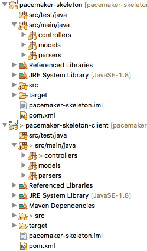
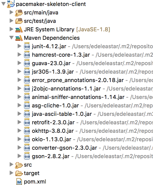
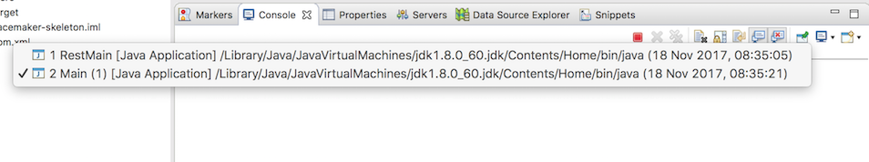
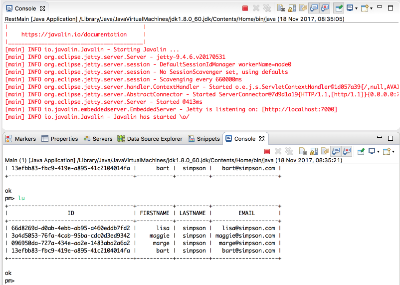
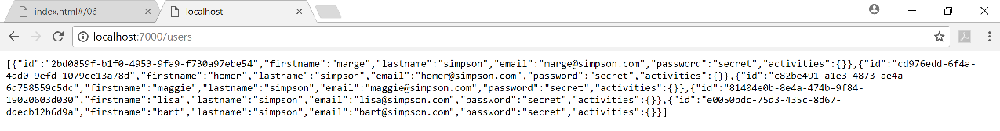
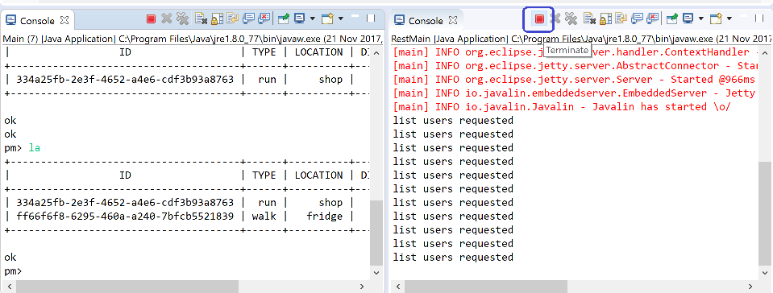

-
Objectives
Implement a new project that will be a client of the pacemaker-skeleton application.
-
Exercise Solutions
These are the exercise solution from Lab09:
The details:
Exercise 2
app.get("/users/:id/activities/:activityId", ctx -> { service.getActivity(ctx); });This retrieves a single activity by id. Implement the
getActivity()method inPacemkerRestService.Solution
controllers/PacemakerRestService
public void getActivity(Context ctx) { String id = ctx.param("activityId"); Activity activity = pacemaker.getActivity(id); if (activity != null) { ctx.json(activity); } else { ctx.status(404); } }Exercise 3
Two final routes:
app.get("/users/:id/activities/:activityId/locations", ctx -> { service.getActivityLocations(ctx); }); app.post("/users/:id/activities/:activityId/locations", ctx -> { service.addLocation(ctx); });Solution
controllers/PacemakerRestService
public void getActivityLocations(Context ctx) { String id = ctx.param("activityId"); Activity activity = pacemaker.getActivity(id); if (activity != null) { ctx.json(activity.route); } else { ctx.status(404); } } public void addLocation(Context ctx) { String id = ctx.param("activityId"); Activity activity = pacemaker.getActivity(id); if (activity != null) { Location location = ctx.bodyAsClass(Location.class); activity.route.add(location); ctx.json(location); } else { ctx.status(404); } }Note in these implementations, we are choosing to ignore the if (the user id), as the activityid is unique in our name space. We could, perhaps, have additional logic to verify that the id is correct, and that the activityId represents a valid activity for that user. If the id is incorrect, we could return a 404.
-
pacemker-skeleton-client project
In Eclipse, you should have a pacemaker-skeleton project, as completed from Lab09. This is an archive of the completed project including exercise solutions:
Using either the above project, or your own solution:
- Create a copy of the project, calling the new folder
pacemaker-skeleton-client Open the
pom.xmlfile, and change the project name and artifact id topacemaker-skeleton-client:<name>pacemaker-skeleton-client</name>Import the
pacemaker-skeleton-clientproject (as a maven project) into Eclipse.
Your eclipse project should look like this:

Note that you should have 2 identical projects named:
- pacemaker-skeleton (the project you built using last week's labs)
- pacemaker-skeleton-client (the project you just imported )
Both implement identical features:
- a REST API for the pacemaker service (via controllers.RestMain)
- a command line application for the pacemaker service (via controllers.Main)
We would like to progressively diverge these two applications such that:
pacemaker-skeleton-> Expose REST API only, removing the CLIpacemaker-skeleton-client-> Command line application only, removing the existing pacemaker implementation
The client application will ultimately utilize the REST API exposed by the service.
First Steps
Simplifying
pacemaker-skeletonis relatively straightforward. Delete the following source files from the project:- controllers.PacemakerConsoleService
- controllers.Main
- controlers.parsers.Parser
- controllers.parsers.AsciiTableParser
You can also delete the, now empty, 'parsers' package.
In the
pacemaker-skeleton-clientproject, remove these classes:- controllers.PacemakerRestService
- controllers.RestMain
- models.Fixtures
In addition, edit the
pacemaker-skeleton-clientpom file, and remove the javalin dependencies:<dependency> <groupId>io.javalin</groupId> <artifactId>javalin</artifactId> <version>0.5.1</version> </dependency> <dependency> <groupId>org.slf4j</groupId> <artifactId>slf4j-simple</artifactId> <version>1.7.21</version> </dependency> <dependency> <groupId>com.fasterxml.jackson.core</groupId> <artifactId>jackson-databind</artifactId> <version>2.9.1</version> </dependency>Both projects should look like this:

The server (
pacemaker-skeleton) should be working fine as is - run it to make sure there are no errors:
- Create a copy of the project, calling the new folder
-
PacemakerAPI in pacemaker-skeleton-client
In the client project, replace the PacemakerAPI class with a stubbed out version, implementing the same signatures:
package controllers; import java.util.Collection; import java.util.List; import models.Activity; import models.Location; import models.User; public class PacemakerAPI { public PacemakerAPI() { } public Collection<User> getUsers() { return null; } public void deleteUsers() { } public User createUser(String firstName, String lastName, String email, String password) { return null; } public Activity createActivity(String id, String type, String location, double distance) { return null; } public Activity getActivity(String id) { return null; } public Collection<Activity> getActivities(String id) { return null; } public List<Activity> listActivities(String userId, String sortBy) { return null; } public void addLocation(String id, double latitude, double longitude) { } public User getUserByEmail(String email) { return null; } public User getUser(String id) { return null; } public User deleteUser(String id) { return null; } }In addition to simplifying the above class, we will also simplify the models. Replace the pacemaker-skeleton-client models with the following versions:
User
package models; import static com.google.common.base.MoreObjects.toStringHelper; import java.io.Serializable; import com.google.common.base.Objects; public class User implements Serializable { public String id; public String firstname; public String lastname; public String email; public String password; public User() { } public String getId() { return id; } public String getFirstname() { return firstname; } public String getLastname() { return lastname; } public String getEmail() { return email; } public User(String firstName, String lastName, String email, String password) { this.firstname = firstName; this.lastname = lastName; this.email = email; this.password = password; } @Override public boolean equals(final Object obj) { if (obj instanceof User) { final User other = (User) obj; return Objects.equal(firstname, other.firstname) && Objects.equal(lastname, other.lastname) && Objects.equal(email, other.email) && Objects.equal(password, other.password); } else { return false; } } @Override public String toString() { return toStringHelper(this).addValue(id) .addValue(firstname) .addValue(lastname) .addValue(password) .addValue(email) .toString(); } @Override public int hashCode() { return Objects.hashCode(this.id, this.lastname, this.firstname, this.email, this.password); } }Activity
package models; import static com.google.common.base.MoreObjects.toStringHelper; import java.io.Serializable; import com.google.common.base.Objects; public class Activity implements Serializable { public String id; public String type; public String location; public double distance; public Activity() { } public Activity(String type, String location, double distance) { this.type = type; this.location = location; this.distance = distance; } public String getId() { return id; } public String getType() { return type; } public String getLocation() { return location; } public String getDistance() { return Double.toString(distance); } @Override public boolean equals(final Object obj) { if (obj instanceof Activity) { final Activity other = (Activity) obj; return Objects.equal(type, other.type) && Objects.equal(location, other.location) && Objects.equal(distance, other.distance); } else { return false; } } @Override public String toString() { return toStringHelper(this).addValue(id) .addValue(type) .addValue(location) .addValue(distance) .toString(); } @Override public int hashCode() { return Objects.hashCode(this.id, this.type, this.location, this.distance); } }Location
package models; import static com.google.common.base.MoreObjects.toStringHelper; import java.io.Serializable; import com.google.common.base.Objects; public class Location implements Serializable { public String id; public double longitude; public double latitude; public Location() { } public String getId() { return id; } public double getLongitude() { return longitude; } public double getLatitude() { return latitude; } public Location(double latitude, double longitude) { this.latitude = latitude; this.longitude = longitude; } @Override public boolean equals(final Object obj) { if (obj instanceof Location) { final Location other = (Location) obj; return Objects.equal(latitude, other.latitude) && Objects.equal(longitude, other.longitude); } else { return false; } } @Override public String toString() { return toStringHelper(this).addValue(id) .addValue(latitude) .addValue(longitude) .toString(); } @Override public int hashCode() { return Objects.hashCode(this.id, this.latitude, this.longitude); } }These versions have the following differences:
- id's no longer generated in the constructors
- the one-to-many relationships have been removed
Specifically, references from Activity -> Location and User -> Activity have been deleted.
You might notice that we have compile errors in PacemakerConsoleService now. We have a single change to make to this class - in the implementation of the 'List all locations' command:
PacemakerConsoleService
@Command(description = "List all locations for a specific activity") public void listActivityLocations(@Param(name = "activity-id") String id) { Optional<Activity> activity = Optional.fromNullable(paceApi.getActivity(id)); if (activity.isPresent()) { // console.renderLocations(activity.get().route); } }As the client is no longer keeping a copy of its locations - we will disable access to this field (for the moment).
-
Retrofit
In the client (
pacemaker-skeleton-client) introduce the following new dependencies into pom.xml:<dependency> <groupId>com.squareup.retrofit2</groupId> <artifactId>retrofit</artifactId> <version>2.3.0</version> </dependency> <dependency> <groupId>com.squareup.retrofit2</groupId> <artifactId>converter-gson</artifactId> <version>2.3.0</version> </dependency> <dependency> <groupId>com.google.code.gson</groupId> <artifactId>gson</artifactId> <version>2.8.2</version> </dependency>When you save the pom in eclipse, you will have a range of additional libraries downloaded and referenced by the application:

We now start to work on implementing the Client API:
Start by declaring this new interface inside the PacemakerAPI source file:
import retrofit2.Call; import retrofit2.http.GET; interface PacemakerInterface { @GET("/users") Call<List<User>> getUsers(); }Place this interface just before the existing PacemakerAPI class and after the existing import statements.
Now make the following changes to the PacemakerAPI:
- introduce a new attribute
pacemakerInterface - replace the existing empty default constructor
public class PacemakerAPI { PacemakerInterface pacemakerInterface; public PacemakerAPI(String url) { Gson gson = new GsonBuilder().create(); Retrofit retrofit = new Retrofit.Builder().baseUrl(url) .addConverterFactory(GsonConverterFactory.create(gson)).build(); pacemakerInterface = retrofit.create(PacemakerInterface.class); }Import the appropriate libraries as prompted by Eclipse auto-correct. If you are having difficulty with the imports, this is the complete revised class at this stage:
package controllers; import java.util.Collection; import java.util.List; import com.google.gson.Gson; import com.google.gson.GsonBuilder; import models.Activity; import models.Location; import models.User; import retrofit2.Call; import retrofit2.Retrofit; import retrofit2.converter.gson.GsonConverterFactory; import retrofit2.http.GET; interface PacemakerInterface { @GET("/users") Call<List<User>> getUsers(); } public class PacemakerAPI { PacemakerInterface pacemakerInterface; public PacemakerAPI(String url) { Gson gson = new GsonBuilder().create(); Retrofit retrofit = new Retrofit.Builder().baseUrl(url) .addConverterFactory(GsonConverterFactory.create(gson)).build(); pacemakerInterface = retrofit.create(PacemakerInterface.class); } public Collection<User> getUsers() { return null; } public void deleteUsers() { } public User createUser(String firstName, String lastName, String email, String password) { return null; } public Activity createActivity(String id, String type, String location, double distance) { return null; } public Activity getActivity(String id) { return null; } public Collection<Activity> getActivities(String id) { return null; } public List<Activity> listActivities(String userId, String sortBy) { return null; } public void addLocation(String id, double latitude, double longitude) { } public User getUserByEmail(String email) { return null; } public User getUser(String id) { return null; } public User deleteUser(String id) { return null; } }There will be an error in PacemakerConsoleService class on this line:
private PacemakerAPI paceApi = new PacemakerAPI();This constructor requires a parameter - which will be the url of the API. We will be running the service on our local machine, so this change will do for the moment:
private PacemakerAPI paceApi = new PacemakerAPI("http://localhost:7000");The project should now compile without errors.
- introduce a new attribute
-
PacemakerAPI
We can implement our first command now in the PacemakerAPI class in the client. Start with the the
getUserscommand;public Collection<User> getUsers() { Collection<User> users = null; try { Call<List<User>> call = pacemakerInterface.getUsers(); Response<List<User>> response = call.execute(); users = response.body(); } catch (Exception e) { System.out.println(e.getMessage()); } return users; }You will need this import statement too:
import retrofit2.Response;If the server project (pacemaker-skeleton) is running, then this
lucommand should work now:
This is rendereing the test users loaded by the server application. If the server is not running, then you will get an error like this:

Running two applications in a single eclipse workspace can be a little challenging. The Console view in Eclipse has a tool bar button called
Display Selected Console(on the extreme right of the tool bar). Selecting it will either list the available console (one per application running), or allow you to list them and select one:
In addition, using a combination of the
New Console View,Pin Consoleand drag and drop within eclipse, it should be possible to rearrange the IDE to display the two consoles simultaneously:
It might be worth spending a little time experimenting with Eclipse until you can assemble the consoles as shown above. be user to experiment with the
Pin Consolebutton, which will prevent the console from altering to always display the most recently active console.We could include some log statements in the pacemaker-skeleton server to aid debugging:
ParemakerRestService
public void listUsers(Context ctx) { ctx.json(pacemaker.getUsers()); System.out.println("list users requested"); }
Revist the two projects to take stock of the content in each
Before moving on, it might be a good idea, at this stage of the lab, to revisit the contents of both projects and broadly familiarise yourself with the workings of each.
-
Register & Login Commands
We can now start to implement additional commands. Each command will typically need both an Interface and API methods.
Register User
Starting with creating a new user. Introduce new method into the PacemakerInterface :
@POST("/users") Call<User> registerUser(@Body User User);(Bring in the appropriate imports)
And then this is the
createUser()API command implementation:public User createUser(String firstName, String lastName, String email, String password) { User returnedUser = null; try { Call<User> call = pacemakerInterface.registerUser(new User(firstName, lastName, email, password)); Response<User> response = call.execute(); returnedUser = response.body(); } catch (Exception e) { System.out.println(e.getMessage()); } return returnedUser; }Restart the client - and try this command:
pm> r homer simpson homer@simpson.com secretWhich should respond with a new user:
+--------------------------------------+-----------+----------+-------------------+ | ID | FIRSTNAME | LASTNAME | EMAIL | +--------------------------------------+-----------+----------+-------------------+ | cf67ed43-77c9-46cd-8e1a-b21930916b42 | homer | simpson | homer@simpson.com | +--------------------------------------+-----------+----------+-------------------+Listing all users should respond with:
pm> lu +--------------------------------------+-----------+----------+--------------------+ | ID | FIRSTNAME | LASTNAME | EMAIL | +--------------------------------------+-----------+----------+--------------------+ | 31509d53-80fd-4b75-8aa1-a1c23cbd9146 | maggie | simpson | maggie@simpson.com | | eb24cf06-c94c-409c-a1b7-2fcb7f4a3356 | bart | simpson | bart@simpson.com | | 27a8a0eb-7f96-4155-ad97-b241ce8d504e | lisa | simpson | lisa@simpson.com | | 25f5a591-410d-4352-8b46-582b6c19785c | marge | simpson | marge@simpson.com | | cf67ed43-77c9-46cd-8e1a-b21930916b42 | homer | simpson | homer@simpson.com | +--------------------------------------+-----------+----------+--------------------+ ok pm>You can also see the homer simpson user by navigating to your local host, port 7000 via your browser.

Login a user
This is our
getUserByEmail()implementation:public User getUserByEmail(String email) { Collection<User> users = getUsers(); User foundUser = null; for (User user : users) { if (user.email.equals(email)) { foundUser = user; } } return foundUser; }Notice that this is rather inefficient - as we request all users, and then once we have fetched them we search of the user by email. Alternative strategies would involve introducing a new api to fetch user details by email explicitly. We will stick to this implementation for the moment.
With this method implemented, out CLI should allow us to log in:

We can register new users, list all users and login and logout (try all these commands). Remember, we are operating a client CLI application, using an API hosted on our local machine.
If, somehow, we could move the server application to another machine (in the cloud), then it could support multiple user logins - and the planned features would start to become useful.
Recall, our client application is 'bound' to the local url on creation:
private PacemakerAPI paceApi = new PacemakerAPI("http://localhost:7000");We could, theoretically, bind it to a service located at any url.
-
AddActivity & ListActivity Commands
Here are implementations of createActivity & getActivities commands:
public Activity createActivity(String id, String type, String location, double distance) { Activity returnedActivity = null; try { Call<Activity> call = pacemakerInterface.addActivity(id, new Activity(type, location, distance)); Response<Activity> response = call.execute(); returnedActivity = response.body(); } catch (Exception e) { System.out.println(e.getMessage()); } return returnedActivity; } //... public Collection<Activity> getActivities(String id) { Collection<Activity> activities = null; try { Call<List<Activity>> call = pacemakerInterface.getActivities(id); Response<List<Activity>> response = call.execute(); activities = response.body(); } catch (Exception e) { System.out.println(e.getMessage()); } return activities; }And the new PacemakerInterface methods (import Path from retrofit):
@GET("/users/{id}/activities") Call<List<Activity>> getActivities(@Path("id") String id); @POST("/users/{id}/activities") Call<Activity> addActivity(@Path("id") String id, @Body Activity activity);Relaunch the server and client, and you should be able to proceed through the command sequence below:
Welcome to pacemaker-console - ?help for instructions pm> l bart@simpson.com secret Logged in bart@simpson.com ok pm> aa walk fridge 23 +--------------------------------------+------+----------+----------+ | ID | TYPE | LOCATION | DISTANCE | +--------------------------------------+------+----------+----------+ | 1079e6b4-647d-4f22-8608-099b0046ca39 | walk | fridge | 23 | +--------------------------------------+------+----------+----------+ ok ok pm> aa run shop 234 +--------------------------------------+------+----------+----------+ | ID | TYPE | LOCATION | DISTANCE | +--------------------------------------+------+----------+----------+ | a17b4a03-61b4-4b69-8fb0-374a7fac98a9 | run | shop | 234 | +--------------------------------------+------+----------+----------+ ok ok pm> la +--------------------------------------+------+----------+----------+ | ID | TYPE | LOCATION | DISTANCE | +--------------------------------------+------+----------+----------+ | a17b4a03-61b4-4b69-8fb0-374a7fac98a9 | run | shop | 234 | | 1079e6b4-647d-4f22-8608-099b0046ca39 | walk | fridge | 23 | +--------------------------------------+------+----------+----------+ ok pm>Remember, for the server you must terminate the application before relaunching.

Generally, the
TerminateandRemove all terminated launchesbuttons on the console tool bar can help in keeping your console organised.(Notice in the above we also removed the duration and time fields from the table)
-
Solution
Exercise 1: getActivity
If this method stub is not implemented in your pacemaker-skeleton-client PacemalerConsoleService class, implement it now:
public Activity getActivity(String id) { return null; }See if you can provide the full implementation based on the previous steps.
HINT: You will need this additional method in PacemakerInterface in PacemakerConsoleService:
interface PacemakerInterface { // ... @GET("/users/{id}/activities/{activityId}") Call<Activity> getActivity(@Path("id") String id, @Path("activityId") String activityId); }Exercise 2: add Location
If this method stub is not implemented in your pacemaker-skeleton-client PacemalerConsoleService class, implement it now:
public void addLocation(String id, double latitude, double longitude) { }Using this new method in the client interface:
Interface PacemakerInterface { // ... @POST("/users/{id}/activities/{activityId}/locations") Call<Location> addLocation(@Path("id") String id, @Path("activityId") String activityId, @Body Location location); }See if you can implement it.